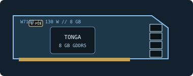

[ LEGACY WORKSTATION GRAPHICS ]
AMD FirePro W7100 8 GB
A 2014 Tonga-based professional workstation card for 3D design, visualization and multi-display applications.

Recorded specifications
| GPU | Tonga-class GCN; 1,792 stream processors. |
|---|---|
| Memory | 8 GB GDDR5, 256-bit memory interface. |
| Interface & power | PCI Express 3.0 x16; 130 W board-power class; one 6-pin PCIe auxiliary connector. |
| Outputs | Four DisplayPort 1.2 outputs; multi-display support and per-output modes depend on driver and connected monitors. |
| Physical fit | Single-slot, full-height board, approximately 241 × 111 mm reference dimensions. Reserve a full-length card position, permit rear bracket access and check the chassis against the individual board. |
Workstation & driver compatibility
Built for professional CAD and visualization and supported on qualified workstation configurations of its era. Requires a PCIe x16 slot, one 6-pin lead and clearance for a long single-slot card.
- Use an AMD legacy professional driver release that lists W7100 and the target OS. Application certification depends on exact software and driver versions.
- Check the workstation maker's approved graphics/power list, PSU capacity, 6-pin wiring and cooling path; do not infer support from slot fit alone.
- Verify the full-height bracket, roughly 241 mm reference length, airflow and DisplayPort adapters against the exact card variant.
Sources & further reading
- AMD — previous drivers and product supportOfficial driver archive; check W7100 and OS support in the specific release.
- AMD — Radeon Pro Software for Enterprise 21.Q2 release notesOfficial professional-driver release and support documentation.
- TechPowerUp GPU Database — FirePro W7100Independent specification and reference-board fit cross-check; OEM board may vary.
Published reference dimensions are not a fit guarantee; measure the actual board and confirm slot, power and cooling requirements.